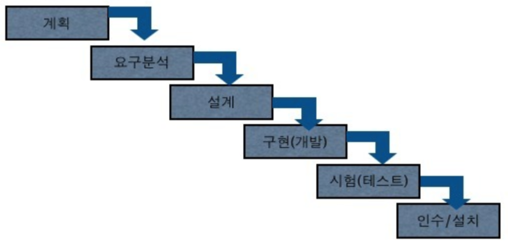
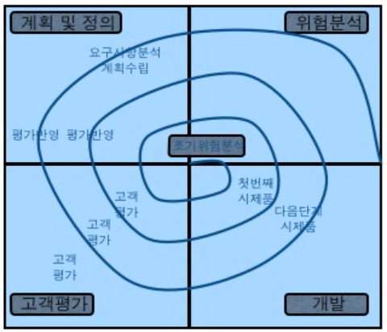
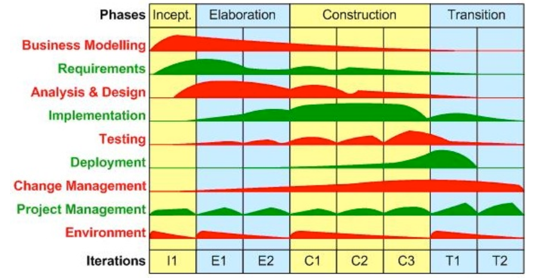
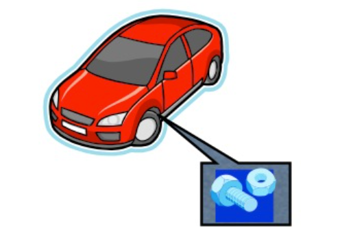

방법론이란?
올바른 방법론 없이 프로젝트의 성공은 없다
예전에 인턴사원 교육때 가장 많이 듣던 말이 방법론이 왜 필요한가 였다.
쉽게 설명하기 위해서 이런저런 얘길했는데 그중에 이말이 가장 와닿을듯 해서 한 이야기가 있다.
긴여행을 떠는 사람이 사전 준비 없이 여행을 떠난다면 그 여행은 분명 힘든 여행이 될것이다.
그런 준비가 되는 가이드북이 바로 방법론이다.
방법론은 선사시대부터 있었다.
예 를 들어 집을 짓는다 치자 그 집을 짓기위해서 다양한 먼저 부지를 선정하고 이때 부지가 얼마나 좋은 환경인지를 확인해야 한다. 모래위에 집을 짓을순 없으니까.
그리고 어떤집을 지을지 설계를 하고 그 설계에 맞게 자재를 구하고 인력을 셋팅 하여 집을 짖는다 인테리어도 하고 외관도 꾸미고… 이런 일련의 작업들을 한순간에 이루어졌겠는가?
분명 시행착오를 거처 어떻게 하면 빨리 튼튼하게 집을 지을지를 고민하게 될것이다.
이렇게 해보니 집이 빨리 지어지드라…
이렇게 해보니 튼튼하게 지어지더라…
이런것들의 경험에서 얻어지는 모든것들을 모아서 하나의 틀로 꾸며지게 되고 그 꾸며진것들이 바로 방법론인것이다.
웹방법론에서도 똑같은 프로세스를 따른다.
- 컨설팅(영업) : 영업 및 제안, 우선사업자선정 이후 기술협상 까지의 일련의 흐름
- 착수 : 실제 프로젝트 투입 (착수보고, 사업수행계획서, 계약)
- 분석 : 환경분석, 고객의 요구사항 분석
- 설계 : IA정의, 화면설계, 디자인시안, 아키텍처 정의, 프로토타입핑, 개발환경 셋팅, 개발설계
- 구현 : 실제 개발, 상세 설계, 상세 디자인, 코딩, 모듈별 개발, 융합, 단위테스트 등까지의 흐름
- 검수 : 작업 완료돈 모든 작업들의 검수 (통합테스트, 체크리스트, 검수확인서)
- 전개 : 완료 후의 작업 (운영자/관리자 교육, 안정화작업, 완료보고, 산출물 제출)
- 유지보수 : 유지보수 및 하자보수 처리 (고객응대 및 지원요청서)
시스템 개발 방법론의 종류
1. 폭포수 모델 (Waterfall model)

폭포수 모델의 특징
- 단계별 순차적 진행,작은 규모의 시스템 개발에 주로 사용됨
폭포수 모델의 약점
- 전단계로의 피드백 불가능 초기 시스템 기능 구체적 기술의 어려움
- 개발 완료 시점 발생 문제점 해결 어려움
2. 원형 개발법 (Prototyping)
개발 초기단계에서 웹 사이트의 원형 즉 프로토타입(prototype)을 만들어 고객과 의사 소통을 명확하게 하고 다음 단계의 개발절차를 진행하는 방법
원형 개발 방법의 특징
- 원형의 개발 및 평가 개발초기 부터 Prototype을 만들어 고객과의 의사소통이 완료 시점까지 진행됨
폭포수 모델의 장점
- 개발 중 발생하는 디자인 및 기능적 오류를 방지할 수 있음
- 사용자들의 욕구에 부합하는 사이트 구축 가능 개발 기간 단축 (순환적 접근 방법)
3. 나선형 접근법 (Spiral approach)

주로 위험도가 높거나 국방 프로젝트 등의 대규모 프로젝트나 국가적 프로젝트에 적용하는 방법
나선형 접근법의 특징
- 폭포수모델, 원형개발법, 위험분석법을 혼용 예고된 순환 즉, 계획된 방복에 의해 오류 수정을 통해 점진적으로 완성체의 형상화
나선형 접근법의 장점
- 대규모 프로젝트에 적합
- 국방 프로젝트 등의 정확도를 요하는 프로젝트에 많이 사용됨
4. RUP 개발방법론 (Rational Unified Process)

객 체지향 모델링 자동화 도구인 Rose 개발업체로 유명한 Rational사는 지난 1990년 중반부터 객체지향 산업계의 표준인 OMG(Object Methodology Group)의 UML을 기반으로 개발한 객체지향 방법론인 RUP를 지속적으로 발전시킴
5. CBD 개발방법론 (Component Based Development)

80년대에 떠오른 소프트웨어 위기(Software Crisis)로 떠오른 객제지향의 개념의 방법론
컴포넌트란? ->객체지향의 의미를 알려면 컴포넌트가 무엇인지를 알아야 한다.
위의 사진처럼 수십만가지의 부품으로 이루어진 자동차의 나사 같은 하나의 부품이 컨포넌트라고 보면 되겠다.
다른 공장에서 나사만 가지고 와서 조립하면 되는... 의미 전달이 되었는지.. ㅋㅋ
CBD 개발방법론 장점
- 컴포넌트의 재사용성 : 소프트웨어의 생산성 및 고품질 보장
- 병렬 개발 가능 : 컴포넌트는 동일시점에 서로 동시에 개발 가능
- 복잡성의 감소 : 적절한 문제의 분할, 단순한 기초기능으로부터 복잡/정교한 솔루션으로 조립
- 컴포넌트의 쉬운 교체 : 새로운 컴포넌트 또는 변경된 컴포넌트의 사용
- 유지보수 용이 및 비용감소 : 컴포넌트의 캡슐화 및 표준적 지침에 의하므로 일관성 유지